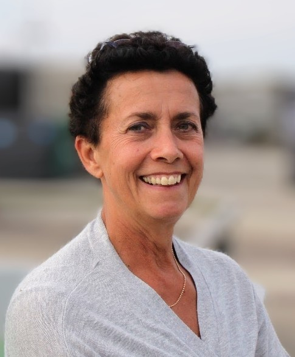

Welkom op mijn website. Ik ben Irisabella Bakker en ik ben gepassioneerd om mensen te helpen via healing.
Of je nu op zoek bent naar rust, balans of herstel, ik sta voor je klaar. Samen werken we aan het herstellen van je energie en het vinden van de balans die je nodig hebt om weer helemaal in je kracht te staan.
Hier vind je alles over hoe ik je kan ondersteunen. Voel je vrij om contact met me op te nemen voor meer informatie of om een afspraak te maken.
Healing is een natuurlijke manier om lichaam en geest weer in balans te brengen. Het helpt je energie te herstellen en blokkades op te heffen die je welzijn kunnen belemmeren.
Tijdens een healing sessie werk ik met energie om je zelfhelend vermogen te activeren. Dit kan je helpen om stress te verminderen, je emoties beter te begrijpen zodat je leert er makkelijker en beter mee om te gaan, en een diepere staat van ontspanning te bereiken.
Of je nu te maken hebt met fysieke klachten, emotionele uitdagingen of gewoon behoefte hebt aan meer innerlijke rust, healing kan je ondersteunen op jouw weg naar herstel en balans. Zo kun je met meer vreugde en rust in het leven staan.
Wanneer je bij mij komt, beginnen we met een gesprek om te begrijpen wat er speelt in je leven. Daarna volgt een healing sessie van ruim een uur.
Tijdens de sessie raak ik je lichaam zachtjes aan om verschillende lagen van stress, zowel fysiek als emotioneel, te voelen en los te maken. Dit helpt om blokkades op te heffen en de energie weer te laten stromen. Soms zitten deze blokkades al langere tijd vast, waardoor meerdere sessies nodig kunnen zijn.
Tijdens de sessie houd je gewoon je kleding aan. Na de sessie bespreken we hoe je het hebt ervaren en of je direct een vervolgafspraak wilt maken. Een healing heeft een doorwerking van enkele weken, dus vaak is pas na een paar weken een tweede, derde of vierde behandeling nodig.
Kosten: De healing zelf duurt een uur en met de voor- en nabespreking zal de hele behandeling ongeveer 1,5 à 2 uur duren; kosten: € 80,00.
Mijn naam is Irisabella Bakker en ik woon en werk op het prachtige Texel. Ik ben een gepassioneerd en empathisch persoon met een sterke connectie met de natuur en de mensen om mij heen.
Ik run mijn eigen bedrijf en ondersteun ondernemers met hun bedrijfsvoering. Hoewel mijn focus voornamelijk ligt op financiële ondersteuning, reikt mijn inzet vaak verder. Veel ondernemers kunnen, al dan niet tijdelijk, ook op andere gebieden wel wat hulp gebruiken. Wat ik vooral breng is rust; niet zozeer als ik bij je op bezoek ben misschien, maar zeker in je werkwijze. Ik houd van duidelijkheid en strakke lijnen, en zorg ervoor dat alles goed is geregeld, zodat jij overzicht hebt en kunt doen waar je goed in bent: ondernemen. Maar vergeet niet, we doen het samen.
Ik geniet ervan om buiten te zijn, wandel graag langs de kust en ga het hele jaar door drie keer per week de zee in voor mijn fysieke en mentale gezondheid. Daarnaast zing ik al ruim 25 jaar in een a cappella groep van drie vrouwen. Muziek is voor mij een krachtige manier om energie door te geven en te ontvangen. Het brengt veel vreugde en vrolijkheid in mijn leven.
Ik hecht veel waarde aan oprechte verbindingen en geloof in de kracht van positieve energie en intentie. Het is mijn doel om anderen te helpen hun innerlijke kracht te ontdekken en te gebruiken om een evenwichtiger en vervullender leven te leiden.
Lieve Irisabella,
Wat ben jij een mooi mens. Het is bijzonder om bij je te zijn en een healing van jou te mogen ontvangen. Met de behandeling ben je in staat om op te ruimen en te laten stromen. Dat geeft voor mij heel veel ruimte om te leven zonder blokkades en ballast. Ik kan het aan iedereen aanbevelen.
Voor ik naar de sessie kwam, was ik een beetje gespannen omdat ik niet wist wat ik kon verwachten. Ik heb de sessie als heel bijzonder en ontspannend ervaren en ik voelde me heel prettig en veilig bij Irisabella. Ik kan het echt iedereen aanraden.
Ik vond de healing zacht, liefdevol en heel ontspannen. Ik kreeg mooie inzichten!
Lieve Irisabella,
De wijze waarop jij bij en voor mij healing doet is niet alleen heel bijzonder, maar het werkt en helpt ook echt! Het geeft me rust, ruimte en balans in het omgaan met de vele gevoelens en emoties die er kunnen zijn. Het is zeker een aanrader voor ieder mens!
Vanaf het eerste moment dat ik bij Irisabella binnenstapte in haar praktijk, voelde het heel warm en fijn aan. Ze neemt de tijd om naar je verhaal te luisteren en gaat daarna met je aan de slag.
De twee keer dat ik nu geweest ben, hebben mij ontzettend goed gedaan. De klachten en spanningen die ik had, zijn zo goed als weg. Mijn energie stroomt weer!
Irisabella is een hele lieve, fijne vrouw bij wie je je onmiddellijk veilig en vertrouwd voelt, en je weet dat het goed is.
Ik kwam binnen, druk in mijn lijf en hoofd wegens werk en relatie. Door de healing ben ik weer helemaal tot (innerlijke) rust gekomen, wat een paar dagen heeft aangehouden. De healing zelf voelde zacht, rustig en toch krachtig!
Als ik op Texel zou wonen (en niet in Amsterdam), zou ik zeker met regelmaat naar Irisabella gaan. Ze is een warme persoonlijkheid bij wie je echt jezelf kunt zijn en waar je je vertrouwd en veilig voelt. Een heerlijk uurtje voor jezelf, waarin je je onderdompelt in totale ontspanning. Een aanrader!
Na al vele healingen van anderen te hebben gehad, kwam ik Irisabella tegen, niet wetende dat ze healingen geeft. Zonder een specifieke vraag ben ik op een avond bij haar terechtgekomen. De ruimte was ontspannen, verlicht met kaarslicht en gevuld met muziek, speciaal voor mij uitgekozen. Irisabella heeft rustig en liefdevol mijn lichaam gescand.
Na ongeveer een uur vertelde ze me wat ze 'zag' en voelde, en heeft ze samen met haar engelen en gidsen een healing uitgevoerd. Ik heb goed geslapen en werd de volgende dag ontspannen wakker. Het was verhelderend, en ik ga zeker nog een keer!
Het was een warm welkom. Fijn om dit samen te kunnen doen en zo te kunnen ontspannen in een veilige omgeving, terwijl Irisabella de knelpunten in mijn lichaam en energie aandacht gaf. Een heerlijke down to earth aanpak met een fijne terugkoppeling op het einde.
Mijn healing sessie bij Irisabella was in eerste instantie heerlijk ontspannend. Ze bracht zelfs zoveel rust dat ik voor het eerst in mijn leven in slaap viel op een behandeltafel. Na afloop vertelde ze mij wat ze allemaal heeft waargenomen en gaf ze tips hoe ik beter voor mijzelf kan zorgen. Wat heel waardevol was!
De dagen er na heb ik rustig aan gedaan, omdat ik voelde dat er veel gebeurd was in mijn lichaam. Het is een aanrader om van Irisabella een healing sessie te ontvangen.
Irisabella biedt een uitzonderlijke ervaring met haar hartgedragen energetische behandelingen. Vanaf het moment dat ik haar sfeervolle ingerichte behandelruimte binnenstapte, voelde ik een warme, rustgevende sfeer die zorgde voor een gevoel van veiligheid en comfort. Haar handen zijn zacht en ze werkt met zoveel aandacht en toewijding dat het voelt alsof ze precies weet waar mijn lichaam behoefte aan heeft.
Tijdens de behandeling ervaarde ik een diepe ontspanning. Haar zachte aanraking in combinatie met haar energetische werk bracht me in een staat van rust en balans. Het is alsof je lichaam en geest volledig de kans krijgen om tot rust te komen, terwijl ze tegelijkertijd nieuwe energie opdoen.
Na de sessie voelde ik me herboren - zowel lichamelijk als mentaal. Irisabella heeft een unieke gave om je volledig in het moment te brengen en je te helpen blokkades los te laten. Ik zou haar behandeling aan iedereen aanraden die op zoek is naar diepe ontspanning en thuiskomen bij jezelf.
Bij Irisabella ben je in goede handen, omringd door warmte en vertrouwen dankzij haar spirituele verbinding. Het is een cadeau om telkens opnieuw haar natuurlijke talenten te ervaren tijdens haar healingen. Samen voelen we haarfijn aan waar de energie mag doorstromen en de healing diep kan worden ontvangen. Wat een prachtige afstemming. Een intens onderhoud voor je energetische balans.
Ik voelde me zeer gehoord en begrepen tijdens de fijne intake. Ik kreeg veel tijd om mijn verhaal te doen. Daarna ontving ik de healing op de tafel, door middel van de zachte en warme aanraking van de handen van Irisabella. Tijdens de healingsessie kwam mijn vader tevoorschijn. De healing voelde erg rustig en ontspannen.
Na de healingsessie voelde ik me letterlijk gearriveerd bij mezelf. Ik voelde mijn kracht. Na de healing kwamen oude overtuigingen naar boven en ik kon meteen voelen dat ik hierin een keuze had, omdat deze overtuigingen niet bij mij hoorden, maar bij een oud systeem.
wilde het gewoon een keer proberen en zou zeker nog een keer gaan als ik die behoefte voel!
Ik heb al een aantal diepe, helende healings van Irisabella mogen ontvangen. Door haar warmbezielde handen voel je de helende kracht in je lichaam en energiecentra binnenkomen. Wauw!
keer wordt er een laag aangeraakt die nodig was voor mij. Dit stroomt mee in mijn proces. Door samen te werken met de spirituele wereld en haar wijsheid, maakt Irisabella je bewust van wat er gezien mag worden. Je bent in liefdevolle handen!
Goedemorgen Irisabella, dank je wel voor de healing die je aan mijn moeder hebt gegeven. Het heeft echt wonderen gedaan, ik heb haar in geen tijden zo ontspannen meegemaakt.
Na de intake in de sfeervolle ruimte van Irisabella heb ik een waardevolle healing mogen ontvangen die mij veel inzichten heeft gegeven. Ik heb het ervaren als een reis die van begin tot eind verhelderend heeft gewerkt met betrekking tot een belangrijke levensvraag van mij. Tijdens de healing voelden haar handen als een warm, weldadig bad.
Het is een heel groot cadeau aan mezelf, van haar.
Als je een healing wilt, dan is Irisabella de juiste persoon. Ze geeft je energie op het moment dat je fysiek of mentaal een “zetje” nodig hebt. Het is fijn om tijdens de healing energetische ontmoetingen te ervaren; zo voelt het gemis minder zwaar. Na de behandeling heb je het gevoel dat je de wereld weer aankunt. Dankjewel, Irisabella.
Bij Irisabella is alles erop gericht om je te laten ontspannen: het prettige kamertje, de warmte, haar handen. Daarnaast is Irisabella echt gericht op jou – op wie je bent. Na de healing vertelt ze je, als je dat wilt, wat ze heeft opgemerkt. En dat is ook een cadeautje: het laat je iets over jezelf zien. Bij mij was het “in de roos” wat ze zei over hoe het op dat moment met me ging. Verbluffend, eigenlijk. Over een tijdje ga ik weer. Ik kan het iedereen aanraden.
Irisabella creëert een veilige en ontspannen sfeer vóór, tijdens en na de behandeling. Ik voelde me na de behandeling heerlijk ontspannen, rustig en licht. De terugkoppeling aan het einde gaf me nieuwe inzichten. Het was een bijzondere en mooie ervaring die zeker voor herhaling vatbaar is en die ik iedereen kan aanraden.
De healing bij Irisabella verloopt ontspannen, en ze stelt je volledig op je gemak. Het leverde mij nieuwe inzichten op, en ik raad iedereen aan om het eens te proberen. Het is een fijne ervaring waarbij ik het gevoel had dichter bij mezelf te komen.
Heb je vragen of wil je een afspraak maken? Neem dan gerust contact met me op. Ik sta klaar om je te helpen en je vragen te beantwoorden. Je kunt me bereiken via de onderstaande contactgegevens.
Telefoon: 06 53 24 52 53
E-mail: Irisabella@xs4all.nl
Adres: Ruijslaan 90, 1796 AZ, De Koog
Irisabella Healing Texel